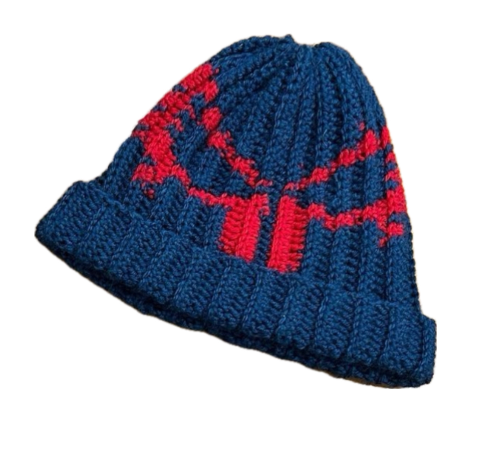

Welcome to My One of My Creative Outlet:
Fashion
I create clothes a jewlrey from scratch. My main way I make tops, shirts, and shorts is by crocheting. I will be displayed my pieces and a short description of them.
Sample of My Work:
Click on each work to see the description of each product!
Material: Acrylic Yarn
Hours: 4hrs
Material: Cotton Yarn
Hours: 4hrs
Material: Cotton Yarn
Hours: 4hrs
Material: Cotton Yarn
Hours: 4hrs

Material: Cotton Yarn
Hours: 2hrs
With my passion towards creative art,during my time at the University of Michigan I had a crochet
business
where I sold pieces to students at the University. We sold many pieces during my time running the
business. Although, since I am graduating - I am no longer running the business. But my next step is to
start an Esty because I want to continue crocheting as a hobby, but also a business.
During my time at College, I attended many craft fairs, when I sold my item. I hopefully I will be continuing this in the future. I got $100s a day :0.
I have an upcoming fair on April 21st at the
Union!